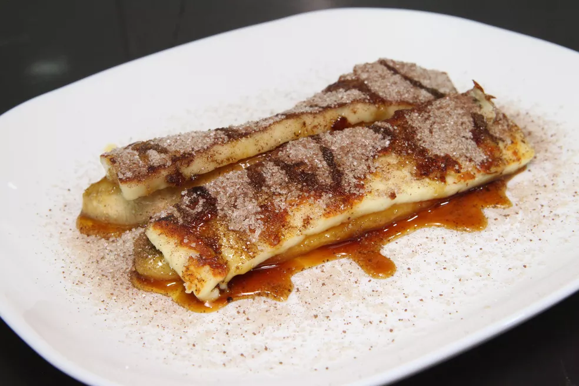

Esfarele com as mãos para umedecer a goma com o coco.
Aqueça uma frigideira e distribua uma porção da goma por todo o fundo.
Deixe assar por 2 minutos em fogo médio.
Vire e deixe mais 1 minuto.
Agora é só servir. Bom apetite.
Camarão na Moranga
Ingredientes
1 abóbora moranga
4 colheres de sopa de azeite (ou a gosto)
1 cebola
2 dentes de alho
1 kg de camarão médio fresco
Sal e pimenta-do-reino a gosto
3 tomates
3 colheres de sopa de ketchup
1 lata de creme de leite sem soro (300 gramas)
300 gramas de requeijão cremoso
Cheiro-verde picado a gosto
Modo de Preparo
Reúna todos os ingredientes do camarão na moranga. Descasque e pique a cebola e o alho em cubos
pequenos. Retire o miolo e sementes e pique o tomate em cubos. Os camarões devem estar limpos, sem casca
e sem cabeça;
Com uma faca afiada, faça um corte em círculo em cima da abóbora, como se fosse uma tampa da abóbora,
mas não retire-a. Envolva a moranga em papel-alumínio, acomode em uma forma e leve ao forno preaquecido
a 180ºC por 1 hora e 30 minutos;
Passado o tempo, abra a tampa da abóbora e, com um garfo, espete superficialmente diversas partes do
interior da abóbora, tomando cuidado para não perfurar e verifique se ela já está macia, porém ainda
firme - caso não esteja, deixe mais alguns minutos no forno;
Com a abóbora cozida, abra a tampa e, com uma colher, raspe e retire as sementes - você pode descartar
ou separar as sementes e assar no forno, assim elas ficam deliciosas;
Regue a moranga aberta com um fio de azeite, espalhando bem por toda a cavidade, e volte-a ao forno (sem
o papel-alumínio) a 180ºC por mais 15 minutos;
Enquanto isso, em uma panela em fogo médio, coloque 4 colheres de sopa de azeite e refogue a cebola e o
alho, até murchar e começar a dourar;
Acrescente os camarões, tempere com sal e pimenta-do-reino e refogue até os camarões ficarem macios e
com uma cor mais rosada (cerca de 2 minutos), mexendo às vezes para não queimar;
Assim que os camarões estiverem cozidos, incorpore os tomates e o ketchup na panela e deixe
cozinhar até ferver e os tomates começarem a murchar (cerca de 2 minutos);
Em seguida, adicione o creme de leite e o requeijão e continue mexendo até o molho engrossar um pouco
(cerca de 5 minutos);
Prove os sabores e, se necessário, acerte sal e temperos. Finalize com cheiro-verde, mexa bem e desligue
o fogo;
Com o auxílio de uma concha, transfira o creme de camarão cremoso para dentro da cavidade da moranga;
Está pronto! Agora é só servir e aproveitar essa delícia. Você pode servir com arroz branco, farofa de
banana-da-terra e uma salada fresca. Para aproveitar a abóbora também, raspe as laterais do interior
dela e coloque no seu prato!
Cuscuz com Carne e Queijo
Ingredientes
1 xícara de chá de flocão de milho
1/2 xícara de chá de água
Sal a gosto
Carne-seca desfiada a gosto
Queijo fatiado a gosto
Modo de Preparo
Em uma tigela, misture o flocão, a água e o sal e reserve por 10 minutos.
Passado o tempo, coloque água até metade do limite da cuscuzeira.
Adicione metade da mistura de flocão e, por cima, espalhe a carne-seca e o queijo.
Cubra com o restante do flocão, tampe e cozinhe em fogo baixo por 10 minutos.
Desligue o fogo, aguarde 3 minutos e desenforme o cuscuz em um prato.
Agora é só servir! Bom apetite.
Cartola

Ingredientes
1/2 colher de sopa de manteiga
2 bananas maduras (mas não tanto)
Fatias de queijo coalho (o suficiente para cobrir as bananas)
Açúcar e canela em pó para finalizar
Modo de Preparo
Esquente uma frigideira e derreta a manteiga.
Adicione as bananas e deixe dourar os dois lados (cerca de 2 minutos). Reserve.
Na mesma frigideira, coloque as fatias de queijo coalho e doure os dois lados também.
Disponha as bananas em um prato e cubra elas com o queijo coalho.